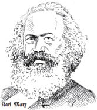
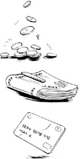

GİRİŞ
Karl Marx’ın Kapital’inin 1. cildi ilk olarak 1867’de yayımlandı. Bu kitap, Marx’ın yirmi yılı aşkın bir süredir kapitalizm hakkında düşündüklerini özgün biçimde bir araya getirdi.
Kapital, kapitalizmin bir eleştirisidir. Marx’ın hedefi, kapitalizmin şu ya da bu örneği değildi. Bunun yerine Marx, hangi ülkede, hangi tarihsel koşullarda gelişmiş olursa olsun, kapitalizmi kapitalizm yapan temel özellikleri saptamak istiyordu. Bu nedenle Kapital, mecburen hayli genel, soyut bir çözümlemedir. Zor okunmasının nedenlerinden biri de budur.
Bir başka neden de kapitalizmin her hücresine kadar giren bu eleştirinin, sevgili okur senin de, bu sözcüklerin yazarı benim de içinde büyüdüğümüz, içinde sosyalleştiğimiz sisteme saldırıyor olmasıdır. Bu yüzden, hepimizin benimsediği ve çevremizdeki kurumların durmadan ürettiği birçok ortak varsayımı kabul etmediği için, bazen sezgilerimize bir hayli ters düşen bir okumadır.
Kapitalizm, yaklaşık 400 yıldan beridir gelişip olgunlaşan toplumsal ve iktisadi bir sistemdir. Kapital’in yayımlanmasından bu yana kapitalizm, Marx’ın eleştirisinin yanlış ve yersiz olduğunu kanıtlamaya uğraşmaktadır ama o, dünyayı anlamak isteyen her yeni kuşağa uygun aletler geliştirmeyi sürdürmüştür. Bugün kapitalizmin küresel varlığı aşağı yukarı tamamlanmış olup egemenliğine neredeyse karşı çıkılamaz duruma gelmiştir. Öyleyse niye Marx’ın kitabını okuma gereği duyalım?
Çünkü birçok insanın, dünyadaki her şeyin pek de düzgün yürümediği yönünde en azından bir sezgisi vardır. Pek çok kişi de insan soyunun karşısında bir sürü büyük problem olduğu konusunda sezginin de ötesine geçmiştir. İşte Marx’ın Kapital’i niye böyle olabileceğinin en sistemli açıklamasıdır.
Kapital, “iktisat” etiketli bir kutuya konulamaz ya da konulmamalıdır. O bir siyaset, tarih, iktisat, toplumbilim, felsefe, zaman zaman da edebiyat eseridir (evet, Marx’ın yazış biçemi o kadar zengin ve kışkırtıcıdır). Hatta Marksist edebiyat eleştirilerinin ilk örneklerini bile içerir. Marx paranın doğasına ilişkin konuları örneklerle açıklamak için sık sık Shakespeare, Goethe, Balzac gibi büyük yazarlardan alıntılar yapar.
Sözgelimi burjuvazinin (daha geniş anlamda kapitalist sistemin) bir yandan para biriktirme hırsı, öte yandan o servetin nimetlerinden yararlanma isteği arasında nasıl çırpındığını ele aldığında, burjuva insanının tam yerine oturan imgesi olarak Goethe’nin trajik oyunu Faust’un başkahramanının şu sözlerini anar:
“Göğsünde iki can taşıyor; heyhat!
Biri diğerinden kopmak istiyor!”
Daha sonra göreceğimiz gibi, birbirinden durmadan uzaklaşan iki ruh (çelişkili kaçınılmazlıklar karşısında ikiye bölünmüş insan), Marx’ın kapitalizmi anlatırken sıkça başvurduğu bir motiftir.
Marx’ın buradaki yaklaşımı, onun genel yönteminin de ipuçlarını verir. Marx siyaset, iktisat, din, felsefe ve bu örnekteki gibi edebiyat eserlerini, ÖRTÜK toplumsal içerikleri için okumaya eğilimlidir.
Kapital’deki sorgulamasının ana amacı, para, kâr, sermaye ve benzeri iktisadi kavramların, kendilerini belirleyen toplumsal içerikleri etkin biçimde neden ve nasıl bastırdıklarını anlamaktır. Ancak bu kavramlar günlük yaşamımızın dokusunu oluşturan nesnelere ilişkin olduğundan, Kapital, işin içyüzünü anlamamızı alışıldık “iktisat” parametrelerinin çok ötesine taşıyan kapsamlı bir çalışmadır.
Kapital, bize hiçbir şey söylemez gibi görünen günlük ipuçlarından yola çıkıp gerçekte ne olup bittiğini kurgulayan bir dedektiflik öyküsü gibi başlar. Müfettiş Marx olay yerine vardığında henüz bir suçun işlenip işlenmediği bile belli değildir. Ama işlenmiştir.
